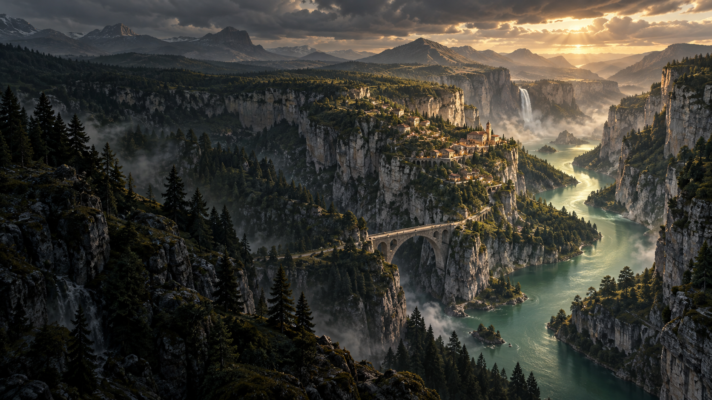

说出你想去的地方。
把环境、气氛与约束，变成清晰的创作方向。

A WORLD OF YOUR MAKING.
以 Agent 为中心的世界创作工具。
从一个想法出发，塑造一个可以持续演进的世界。
山川之间，
世界开始有了故事。
01 THE VISION
地形是起点。道路连接聚落，建筑回应场所，生态沿水系与气候展开。Vesta 的愿景，是让 Agent 与程序化工具共同理解、塑造和迭代这些关系。
地形、道路、街区与建筑
愿景概念 · 领域能力逐步建设水系、生物群落与生态系统
愿景概念 · 完整生态创作尚未实现TERRAIN → ENVIRONMENTS → WORLDS
02 REAL OUTPUT. REAL POSSIBILITIES.
下面是 Vesta 已有高度场结果的展示短片。
从连续山脊，到层叠岩台，
每一种形态都来自可复用的程序化过程。
Ridge → Terraces
真实样本 · 展示渲染
塑造连绵的山脊。
刻出层叠的岩台。
基于 Vesta CLI 真实输出的 512² 地形；动画仅改变展示相机。
这些是已计算高度场的可视化短片，不是实时生成速度、侵蚀演化过程或 Builder 界面录屏。两组样本使用相同显示起伏，源高度未改动。样本来源记录 ↗
03 AN AGENT AT THE HEART OF CREATION
Vesta 正在构建以 Agent 为中心的 World Builder：围绕你的意图提出计划、调用工具、观察结果，再一起修正。专业编辑能力融入同一个创作环境，随时允许人工接管。
把环境、气氛与约束，变成清晰的创作方向。
Agent 通过受控工具使用当前已实现的计算与资产能力。
修改参数、检查过程、调整局部，让世界持续演进。
ONE CREATIVE ENVIRONMENT
世界上下文留在 Builder；会话、模型与历史由连接的 Agent 持有。当前已接通 Vesta Agent，其他 Agent 通过适配器逐步接入。
Studio 是当前节点、VDA 与地形能力的承载前端。未来这些能力将逐步迁入 World Builder，由 Builder 取代 Studio，形成统一的 Agent 中心创作工具。
Agent 推进工作，程序化过程保留结构。
你可以查看、修改、撤销，并把有效的过程留下来，
用于下一个场景、下一次创作。

展示已有节点与 VDA 能力，不代表未来 Builder 的最终界面。
04 A WORLD IN PROGRESS
Vesta 处于技术预览开发阶段。
当前先打磨地形与创作底座，
再逐步拓展世界的规模和复杂度。
Graph / VDA 与 CLI 执行链
地形参数与结果预览
部分地形算子的 CPU / GPU 实现
Unreal 高度场执行
Builder 与 Vesta Agent 真实连接
以 Agent 为中心的 Builder 工作流
现有创作能力向 Builder 汇聚
交互、算子与结果一致性
更多 Agent 连接适配
地形、道路、建筑与生态组合
围绕目标的计划、评价与修复
可复用资产与持续世界迭代
角色与动画的后续扩展
更完整的引擎交付流程
状态基准：2026.10.16。已有切片不代表完整产品或生产交付流程已经验收。